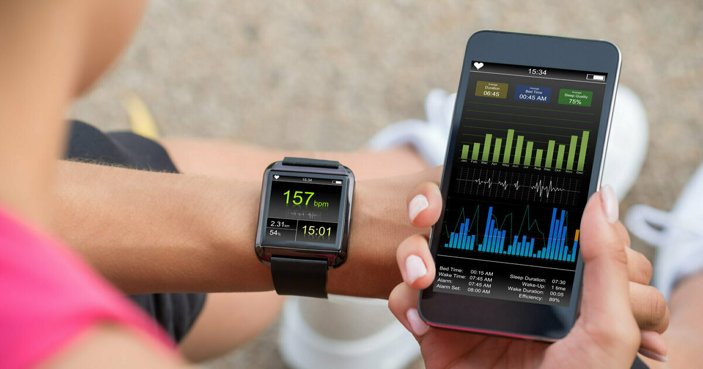
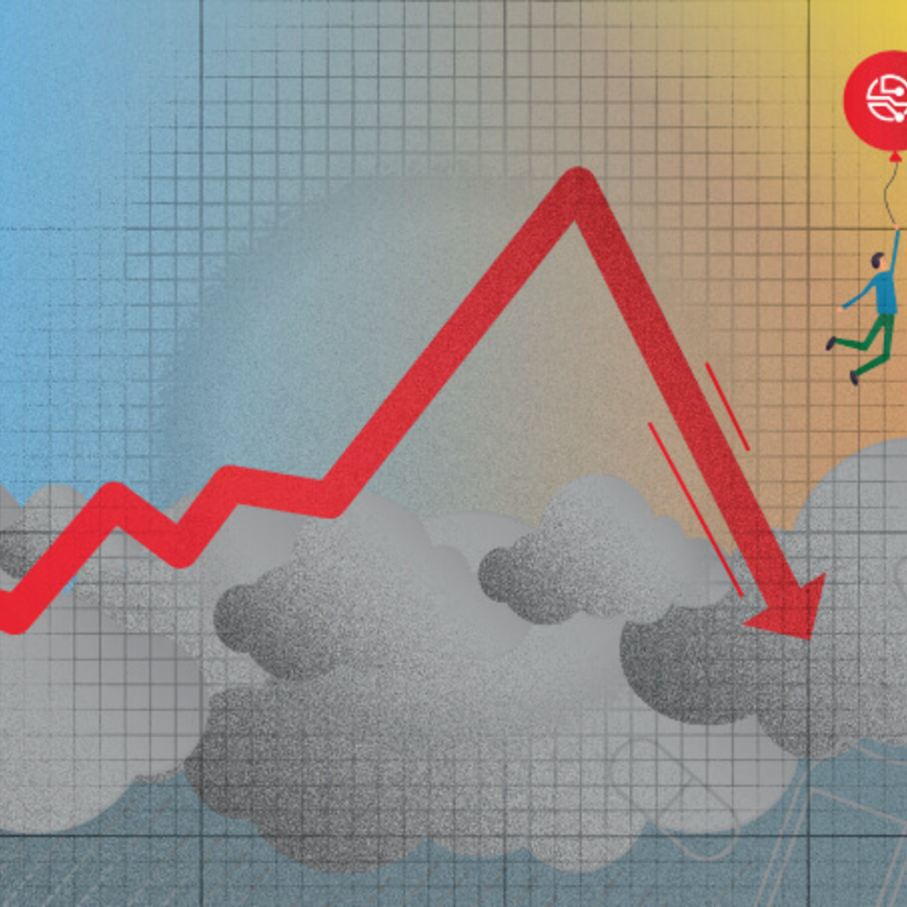

In this project, I analyzed trends among Fitbit smart device users.
Through my analysis I made marketing recommendations
for a start up health and wellness company Bellabeat.
I used R for data cleaning, wrangling, aggregation, statistics and visualization in this project.

In this project, I analyzed data from a bike sharing company.
Through my analysis I made marketing recommendations
for increasing annual membership subscription.
In this project, I used Excel for data cleaning, R for aggregation and statistics and Tableau for visualization
In this project, I analyzed the effects of the great recession on the economy of five US states(CA, MI, FL, NC and MA).
Through my analysis I looked at how the recession affected some key economic factors like GDP...
I used Excel for data cleaning, R for aggregation,statistics and visualization
